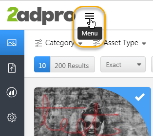

Asset Activity Logs
In just one click, you can assess the performance of your assets by viewing how many times an asset has been viewed and downloaded by whom. You can get the data you need to optimize and manage your assets, by tracking the changes made during edit cycles.
As you upload new versions of the asset, older versions are no longer available.
Change Logs:
All additions/edits made to the ‘Asset Details’ are recorded and stored in the log file. The change log contains a curated, chronologically ordered list of notable changes for each version of the asset.
Typically, the final or most recent version of the asset always displays. Change logs allows easy access to view details of previous changes. Having complete history details, enables checking the list of changes made to the asset easy.
Download History:
The Download History panel keeps track of download details of the asset.
To view the change logs:
- Click the ‘Menu Icon’ and select ‘Assets’ from the side bar
 
- The assets display
- Roll/Hover over the asset to select it
- Click to view the ‘Change Logs’ and the ‘Download History’ of the asset
The details include the author, type of change, date and description of the change.
To view and track asset download history:
- Click the ‘Download History’ tab to view download details of the asset
The asset download details are displayed by:
User ID:
Date:
Field Name:
Old Value:
New Value: